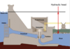

hydraulic_head

Definition: Hydraulic head or piezometric head is a specific measurement of liquid pressure above a vertical datum.It is usually measured as a liquid surface elevation, expressed in units of length, at the entrance (or bottom) of a piezometer. In an aquifer, it can be calculated from the depth to water in a piezometric well (a specialized water well), and given information of the piezometer's elevation and screen depth. Hydraulic head can similarly be measured in a column of water using a standpipe piezometer by measuring the height of the water surface in the tube relative to a common datum. The hydraulic head can be used to determine a hydraulic gradient between two or more points.
Source: Wikipedia
Wikipedia Page (Something wrong with this association? Let us know.)
Wikidata Page (Something wrong with this association? Let us know.)
Occurs in: